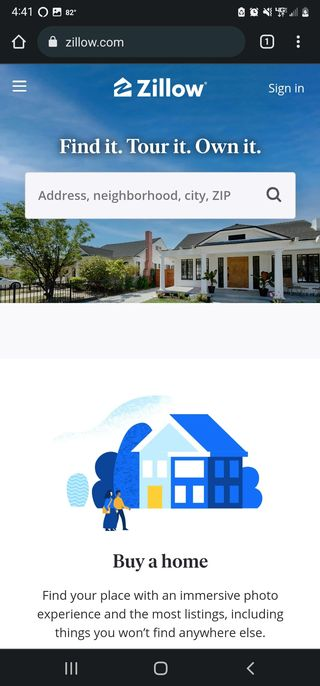
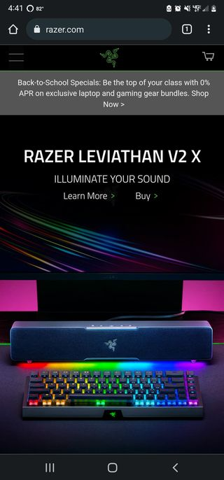

Repetition
Zillow
zillow.com

Zillow repeatedly uses blue, white, and yellow/wood coulor. This
is used to reinforce their brand and to give the user a sense of
cleanliness. The phrase, "Find it. Tour it. Own it." uses a
repeating reference to your future house to make the user more
comfortable with the idea of buying/renting property from them.
Their headings use the same serif font and their input boxes
and paragraphs use the same sans-serif font.
Alignmnet
Sitepoint
sitepoint.com
The titles in each category of the library page adhere to both vertical
and horizontal alignmnet. Each section of the site uses the same margin
on the right and left side of the screen, comfortably centering the
content and justifying it to the left. They even placed the hamburger-menu
on the right side of the screen to make it easier to reach.
Contrast
Razer
website address

Razer's website is full of contrast. The items being advertised are
placed on a dark background to draw the attention to the RGB elements
of their products. Their titles and text-content are white or green
and easily contrast with the background of their website or any RGB
effects in their advertisement. They use bold and completely capitalized
titles to contrast with their sans-serif text content.